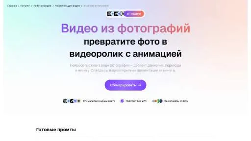
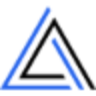

ZebracatYouTube и блогинг
Zebracat используют, чтобы собирать видеосцену по описанию или визуальному исходнику. Ещё одно направление работы: готовить видеоматериалы для публикации.
Раздел «Видео и анимация»: варианты ИИ для этой задачи, описания возможностей и переходы к обзорам. Сравните несколько решений на одинаковом примере.
Оживите собственную иллюстрацию парка для вставки в творческий ролик. Задайте один вид движения и спокойную камеру; просмотрите весь результат, сравнивая положение скамейки, очертания деревьев и края дорожки с исходным изображением перед использованием в монтаже.
Оживи мою иллюстрацию парка: листья слегка колышутся, камера остаётся неподвижной. Сохрани форму скамейки, расположение деревьев и изгиб дорожки; не добавляй людей, птиц и новых предметов в сцену.

Zebracat используют, чтобы собирать видеосцену по описанию или визуальному исходнику. Ещё одно направление работы: готовить видеоматериалы для публикации.

Zeemo создаёт субтитры для видео и предоставляет средства их дальнейшей правки. Пользователь может работать с динамическим оформлением, переводить текст и редактировать субтитры группами. Дополнительные видеоинструменты служат для подготовки публикаций, где нужно сочетать исходный ролик с читаемым текстовым сопровождением на разных языках.
«Afri Studio» представлен в разделе «Видео и анимация». При выборе проверьте нужную операцию и условия работы с результатом.
AICUT рассчитан на задачи, где нужно собирать видеосцену по описанию или визуальному исходнику. Ещё одно направление работы: готовить видеоматериалы для публикации.
«AISora2» создаёт видеоматериал по заданию. «AISora2» также помогает подготовить персонализированный видеоматериал.
«Akkadu AI Subtitles» работает с текстом субтитров.
Сравнивать «Artificial Studio» с другими инструментами раздела «Видео и анимация» удобнее на одинаковом исходном материале.
«AutoCut» помогает править исходный видеоматериал.
AutoPod помогает редактировать подкасты в Adobe Premiere Pro. В наборе предусмотрены работа с несколькими камерами и создание фрагментов для соцсетей в разных форматах. Продукт связывает подготовку основного выпуска с его короткими версиями, когда одно исходное обсуждение используется для нескольких видов дальнейшей видеопубликации.
«Bannerbear» готовит визуальные материалы по заданию. «Bannerbear» создаёт видеоматериал по заданию.
«BHuman» создаёт видеоматериал по заданию. «BHuman» помогает подготовить персонализированный видеоматериал.
«Big Room» работает с материалами для социальных площадок.
«Bleep Censor AI» представлен в разделе «Видео и анимация». При выборе проверьте нужную операцию и условия работы с результатом.
«Bolt Foundry» преобразует речевую запись в письменный материал.
«BookWatch» помогает подготовить резюме.
«CaptionCreator» преобразует речевую запись в письменный материал. «CaptionCreator» работает с текстом субтитров.
«ClipNow» подготавливает короткие фрагменты видеозаписи. «ClipNow» также помогает подготовить персонализированный видеоматериал.

«Clips AI» подготавливает короткие фрагменты видеозаписи. «Clips AI» также работает с материалами для социальных площадок.
«CoCoClip AI» помогает собирать и править видеоматериал. «CoCoClip AI» работает с материалами для социальных площадок.
«CueCam» представлен в разделе «Видео и анимация». При выборе проверьте нужную операцию и условия работы с результатом.
Сравнивать «Deep Live Cam» с другими инструментами раздела «Видео и анимация» удобнее на одинаковом исходном материале.
«EasyMedia AI» работает с материалами для социальных площадок.
«Gojiberry» создаёт видеоматериал по заданию. «Gojiberry» работает с материалами для социальных площадок.
«hyper.online» создаёт портретные и аватарные изображения.
Kaiber создаёт художественные видеопоследовательности из фотографии и музыкального материала. Визуальное оформление строится вокруг меняющихся стилизованных кадров исходного изображения.
Для «Layerpath» сначала определите свою задачу и требуемый результат. Карточка относится к направлению «Видео и анимация».
Сравнивать «LivePortrait AI (liveportraitai.com)» с другими инструментами раздела «Видео и анимация» удобнее на одинаковом исходном материале.
«Loud Fame» представлен в разделе «Видео и анимация». При выборе проверьте нужную операцию и условия работы с результатом.
«MidGenie» согласует движения губ с речевым материалом.
Munch перерабатывает длинные материалы в короткие фрагменты и публикации для социальных площадок. ИИ используется для выбора содержательных участков и подготовки отдельных постов под разные платформы. Инструмент предназначен для повторного использования контента, когда один большой исходник становится основой нескольких самостоятельных материалов для дальнейшего размещения.
«Neural4D» подготавливает трёхмерные объекты.
«NinjaVid» работает с текстом субтитров.
«Nullface AI» создаёт видеоматериал по заданию. «Nullface AI» работает с текстом субтитров.
«Oniooo» готовит визуальные материалы по заданию. «Oniooo» также создаёт видеоматериал по заданию.
Сравнивать «PopShort.AI» с другими инструментами раздела «Видео и анимация» удобнее на одинаковом исходном материале.
«Prism Clips» подготавливает короткие фрагменты видеозаписи.
«reap» подготавливает короткие фрагменты видеозаписи.
Для «Rebellis AI» сначала определите свою задачу и требуемый результат. Карточка относится к направлению «Видео и анимация».
Сравнивать «ReelCraft» с другими инструментами раздела «Видео и анимация» удобнее на одинаковом исходном материале.
«RemoveBackgroundsAI» отделяет объект от фона изображения.
Для «Scrybe» сначала определите свою задачу и требуемый результат. Карточка относится к направлению «Видео и анимация».
«SendShort» помогает править исходный видеоматериал.
Для «ShortsFaceless» сначала определите свою задачу и требуемый результат. Карточка относится к направлению «Видео и анимация».
Для «SimpleScreen» сначала определите свою задачу и требуемый результат. Карточка относится к направлению «Видео и анимация».
«THE FABLE STUDIO» помогает подготовить персонализированный видеоматериал.
Для «TLDWAI» сначала определите свою задачу и требуемый результат. Карточка относится к направлению «Видео».
«Unscreen» отделяет объект от фона изображения.
«Vexads» представлен в разделе «Видео и анимация». При выборе проверьте нужную операцию и условия работы с результатом.
Страница 5 из 13